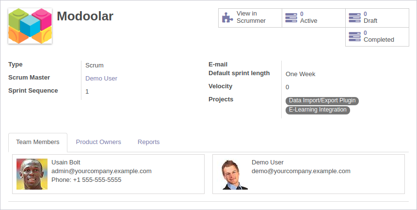
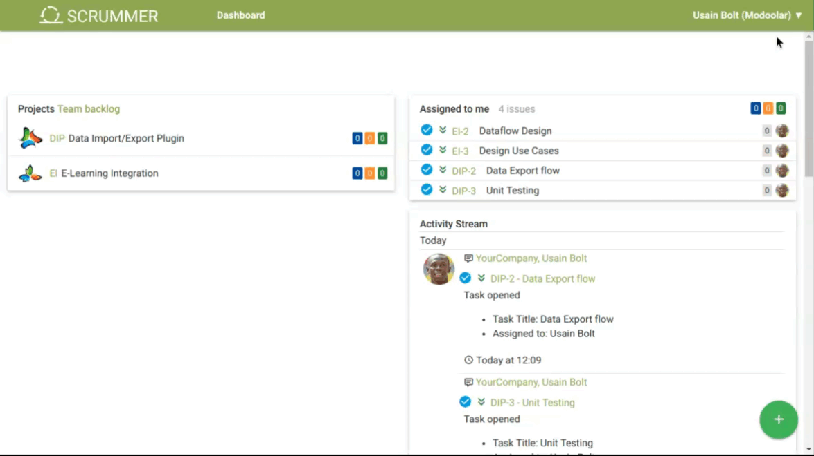

Usage
Some of screenshots on this page are made on Odoo with installed Scrummer Scrum module.
In order to give an user access to the Scrummer, it must be assigned to an Agile Team. This can be achieved from menu Project > Agile > Teams.

Each team can work on multiple project, and more than one team
can work on a single project.
Each user can be assigned to
multiple teams, but in Scrummer it is necessary to set the team
context.

Take a look at Task view in Scrummer